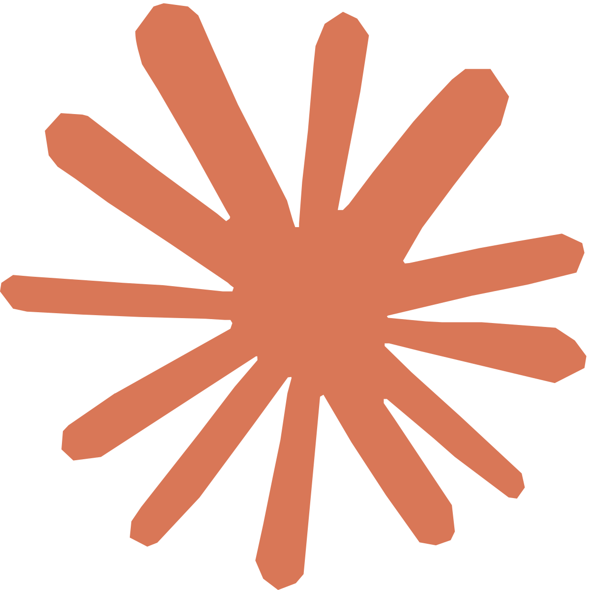
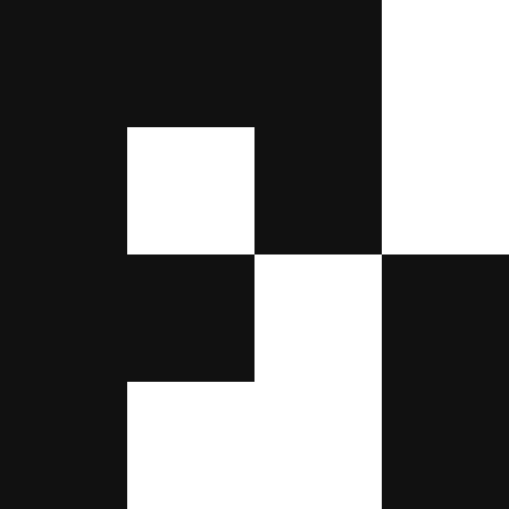

Theme preview
tides.ts Cache the day’s tide timesexport async function getTides(day: string) {
// Reuse a recent forecast.
const cached = cache.get(day);
if (cached) return cached;
const tides = await readTides(day);
cache.set(day, tides, { ttl: 300_000 });
return tides;
}words.py Count wordsfrom collections import Counter
text = "wind over water over sand"
words = Counter(text.split())
print(words.most_common(1))temperature.rs Convert Fahrenheit to Celsiusfn celsius(raw: &str) -> Option<f32> {
let fahrenheit: f32 = raw.parse().ok()?;
let offset = fahrenheit - 32.0;
Some(offset * 5.0 / 9.0)
}health.go Serve a health checkpackage health
import "net/http"
func check(w http.ResponseWriter, _ *http.Request) {
w.WriteHeader(http.StatusNoContent)
}options.lua Set up Neovim-- Keep context while scrolling.
vim.opt.scrolloff = 6
vim.opt.number = true
vim.cmd.colorscheme("ukiyo")routes.sql Rank ferry routesSELECT route, COUNT(*) AS trips
FROM ferry_log
GROUP BY route
ORDER BY trips DESC
LIMIT 3;The forecast now stays in the cache for five minutes.
tides.ts- cache.set(day, tides);+ cache.set(day, tides, { ttl: 300_000 });PASS tides.test.ts (3 tests)
Reply to thread
Build · Updated the forecast cache.
tides.ts- cache.set(day, tides);+ cache.set(day, tides, { ttl: 300_000 });PASS tides.test.ts (3 tests)
tides $ npm test -- tides
PASS tides.test.ts
✓ fetches today’s tide times
✓ reuses a cached forecast
✓ refreshes after five minutes
Tests: 3 passed
tides $Find your tool
No matching tools. Try a different name.
Editors
- NeovimInstall guide
 VS CodeInstall
VS CodeInstallRun Extensions: Install from VSIX… from the Command Palette, then choose a Ukiyo variant.
Install guideCursorInstall
Run Extensions: Install from VSIX… from the Command Palette, then choose a Ukiyo variant.
Install guideVSCodiumInstall
Run Extensions: Install from VSIX… from the Command Palette, then choose a Ukiyo variant.
Install guide ZedInstall
ZedInstallCopy the theme file to ~/.config/zed/themes/ on macOS or Linux. Restart Zed and open the theme selector.
Install guide JetBrains IDEsInstall
JetBrains IDEsInstallIn IntelliJ Platform 2024.3 or later, open Settings → Plugins → Install Plugin from Disk…, select the JAR, and restart if prompted.
Install guide HelixInstall guide
HelixInstall guide- Sublime TextInstall guide
Agents
 T3 CodeInterface and terminalInstall
T3 CodeInterface and terminalInstallCopy a theme file to ~/.t3/userdata/themes/ and select it in Settings. Both themes use Kami in light mode.
Install guideCodex CLISyntax and diffsInstall
Copy the file into the themes directory under CODEX_HOME (defaults to ~/.codex), then run /theme. Set the same variant in your terminal to match the rest of the session.
Install guide
Claude CodePrompts, messages, and diffsInstallCopy the file into ~/.claude/themes/ and choose it with /theme. Set your terminal to the same variant for the background.
Install guide
PiMessages, tools, syntax, and diffsInstallCopy the file into ~/.pi/agent/themes/, restart or run /reload, then pick Theme in /settings. Your terminal supplies the session background.
Install guide
Terminals & CLI
Windows TerminalTerminal schemeInstall
Put ukiyo.json in the Ukiyo folder under %LOCALAPPDATA%\Microsoft\Windows Terminal\Fragments. Restart Windows Terminal and choose a Color scheme under a profile’s Appearance.
Install guide
Color palette
Select a swatch to copy its hex value. Contrast ratios use the editor background of the selected variant. Palette source